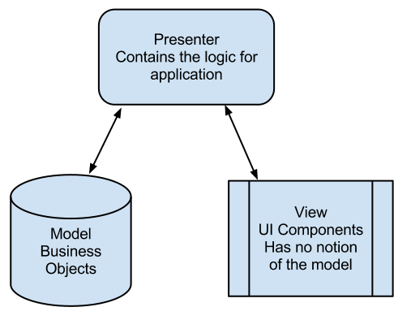
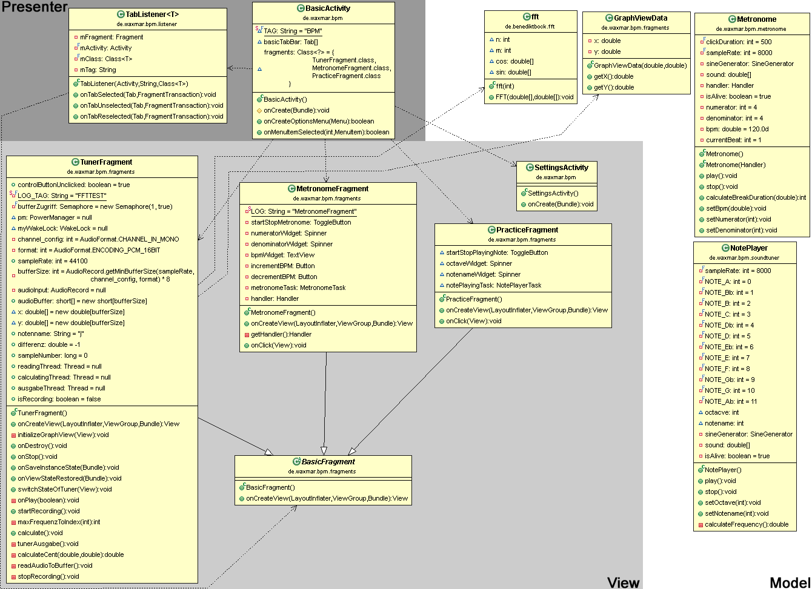
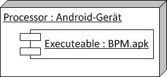

BPM
Software Architecture Document
Version 1.0
Revision History
|
Date |
Version |
Description |
Author |
|
26/Nov/13 |
1.0 |
Template angepasst und Text geschrieben |
Benedikt B. |
Table of Contents
Software
Architecture Document
Dieses Dokument bietet einen umfassenden Überblick über die Architektur des Systems. Dazu werden einige unterschiedliche Übersichten genutzt, welche unterschiedliche Aspekte des Systems darstellen. Es sollen die signifikantesten Entscheidungen dargestellt werden.
Dieses Software Architecture Dokument bietet einen Überblick über die Architektur von BPM. BPM wird im Zuge des Kurses Software Engineering entwickelt
N/A
Dieses Dokument präsentiert die Architektur als eine Folge von Übersichten, logische Übersicht und Deployment Übersicht.
Ziele und Vorgaben sind der Software Requirements Specification bzw. den einzelnen Use Cases zu entnehmen.
Siehe Software Requirements Specification
Siehe Software Requirements Specification
Dieser Abschnitt beschreibt die signifikantesten Teile der Software. Wie sie aufgebaut ist.


N/A

Bisher benötigt die Anwendung keine Datenbank.
Patterns uns Refactoring sind in den commits des zugehörigen GitHub-Repository vermerkt. GitHub Repository